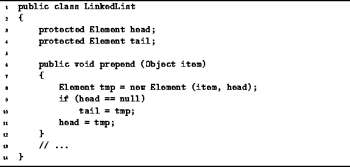

Data Structures and Algorithms
with Object-Oriented Design Patterns in Java
Data Structures and Algorithms
with Object-Oriented Design Patterns in Java
To prepend an element to a linked list
is to insert that element in front of the first element of the list.
The prepended list element becomes the new head of the list.
Program  gives the algorithm for the
prepend method of the LinkedList class.
gives the algorithm for the
prepend method of the LinkedList class.

Program: LinkedList class prepend method.
The prepend method first creates a new LinkedList.Element. Its datum field is initialized with the value to be prepended to the list, item; and the next field refers to the first element of the existing list by initializing it with the current value of head. If the list is initially empty, both head and tail refer to the new element. Otherwise, just head needs to be updated.
Note, the new operator initializes the new
LinkedList.Element instance by calling its constructor.
In Section the running time of the constructor
was determined to be O(1).
And since the body of the prepend method adds
only a constant amount of work,
the running time of the prepend method is also O(1).
 Copyright © 1998 by Bruno R. Preiss, P.Eng. All rights reserved.
Copyright © 1998 by Bruno R. Preiss, P.Eng. All rights reserved.